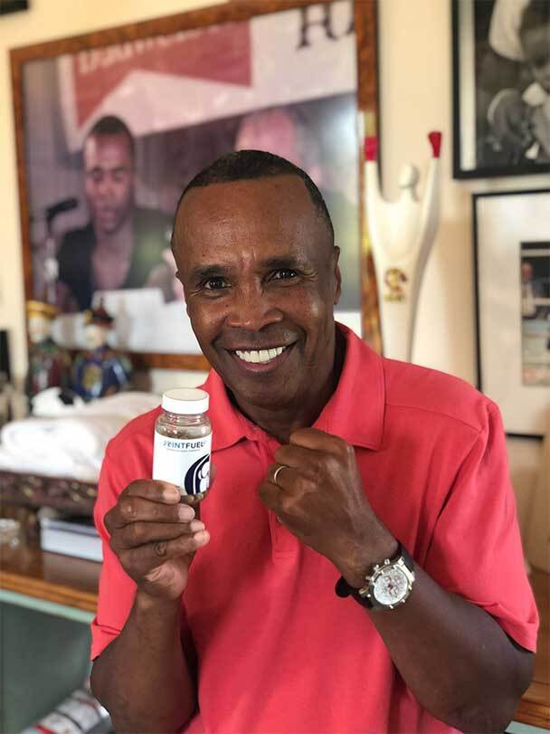
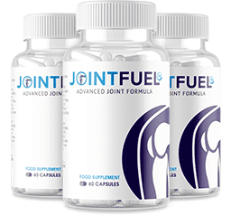

Doctor Struggles to Treat 80 Year Old Grandmothers Arthritis, So She Turns to Turmeric, Heres What Happens...
If you find yourself thinking you're going to be stuck on prescription medications for the rest of your life just to ease the pain of arthritis or joint pain, you should read the JointFuel360 testimonial Iris just sent us.
We hear far too often that people have to turn to prescription drugs to ease joint pain and knowing the side effects many of these prescriptions hold in store, we cringe every time. It's turmeric reviews like Iris’ that make us extremely happy because someone has been able to stop taking prescription drugs and they've been able to replace it with natural remedies that people have been using for thousands of years.

How Iris Is Now Walking 5 Miles A Day, Pain-Free
“My doctor told me he had no idea how to treat arthritis… so I decided to treat it myself. See, I’ve always been a positive and happy sort of person. But things changed when I had shoulder replacement surgery about 3 years ago.
Soon after, my arthritis - which had already been affecting my legs, back, and arms - started attacking my hands. I was having these episodes where I suddenly couldn’t walk or hold myself up… my legs would just turn to rubbish. The last time it happened was at a family bonfire, with my loved ones all around.
From one moment to the next, I couldn’t walk anymore… and the pain was just excruciating. My son-in-law had to hold me up, and I just kept thinking, ‘Is this going to be my life?’
"I do my garden, especially weeding which has always been a nightmare!"
Not long after, I saw a post on Facebook about JointFuel360 and started researching. After reading through the customer reviews, I thought it would be worth a try. I ordered a bottle, and began taking two pills daily - once in the morning, and once at night.
Now, I must admit… at my age, I can’t jump into things as quickly as I used to. But have you ever seen an 80-year old woman walk 4-5 miles a day? Because that’s what I’ve been doing since the COVID lockdown in March. It’s something that I couldn’t have done two or three years ago. My joints are so much more nimble now too.
I’ve tried other turmeric supplements, as well as Glucosamine and Chondroitin, but they never really helped me like this. Most importantly, ever since I started taking JointFuel360, I haven’t had any episodes where I feel intense pain and suddenly can’t walk. My friends tell me “How are you walking? You don’t seem to be 80”. Out of all them, I’m the only one that can walk.
And I don’t want it to sound like I’m bragging… but I feel so very fit and positive now. JointFuel360 has reopened doors for me that I was certain were closed forever. Take it from me... if it can get this 80-year old grandmother up and walking pain-free for hours a day, imagine what it will do for you.”
Benefits of using JointFuel360
It’s no big secret that arthritis and other conditions can lead to chronic, debilitating joint pain. But what’s not so well known is that Turmeric Curcumin has been used for over 4,000 years.
Countless doctors around the world are urging consumers to take Turmeric Curcumin on a daily basis. The reason that it is so successful is because it can help aid in the fight against joint discomfort. JointFuel360 not only has the highest quality Turmeric but, is also packed with other amazing all-natural ingredients that have incredible benefits.
JointFuel360s ingredients have been studied in countless clinical studies for potential benefits in…
- Joint discomfort and mobility
- Anti inflammatory support
- Digestive system
- Heart health
- Anti aging
HALL OF FAMERS LOVE JOINTFUEL360!!
Sugar Ray Leonard, a hall of fame professional boxer and an Olympic gold medalist loves JointFuel360.
CAUTION: Not all turmeric supplements are created equal!
The reason you take a turmeric supplement is to get the key ingredient curcumin, but unfortunately, many products do not contain high enough levels of curcuminoids needed to provide any benefits.
In addition to using only the highest quality turmeric available, JointFuel360’s formula also combines 5 other clinically researched ingredients into one total joint health product.
A major problem with curcumin is that it is very difficult for your body to absorb. The JointFuel360 formula solves this by adding black pepper extract to help with absorption and bring out the best of curcumin’s benefits.
The JointFuel360 formula also includes Resveratrol for anti-inflammatory effects, Type II Collagen which contains the amino acids found in the framework of human cartilage, Boswellia Serrata to help moderate inflammation associated with osteoarthritis, and Hyaluronic Acid to help with relief from joint discomfort.
The result is a far more effective formula than ANY standalone turmeric supplement! If you're looking for RESULTS, you want JointFuel360 to help nourish your joints and help get you moving.
- Knee pain
- Shoulder and Elbow pain
- Lower back pain
- Rheumatoid arthritis
- Neck and Back pain
- Psoriatic arthritis
- Bursitis
Do you suffer from any of the following?
See what customers are saying about JointFuel360
Conclusion
If you are looking for the best product on the market to relieve joint discomfort and help you get moving again, then JointFuel360 is for you.
Not only is it our #1 selling product on the market today but even comes with a 100% Satisfaction, 60 Day Money Back Guarantee! For a limited time, JointFuel360 is 40% off today along with FREE SHIPPING!
For a limited time, you can save up to 40% when you purchase a multipack of JointFuel360.
 SAVE 40% NOWSecure Transaction